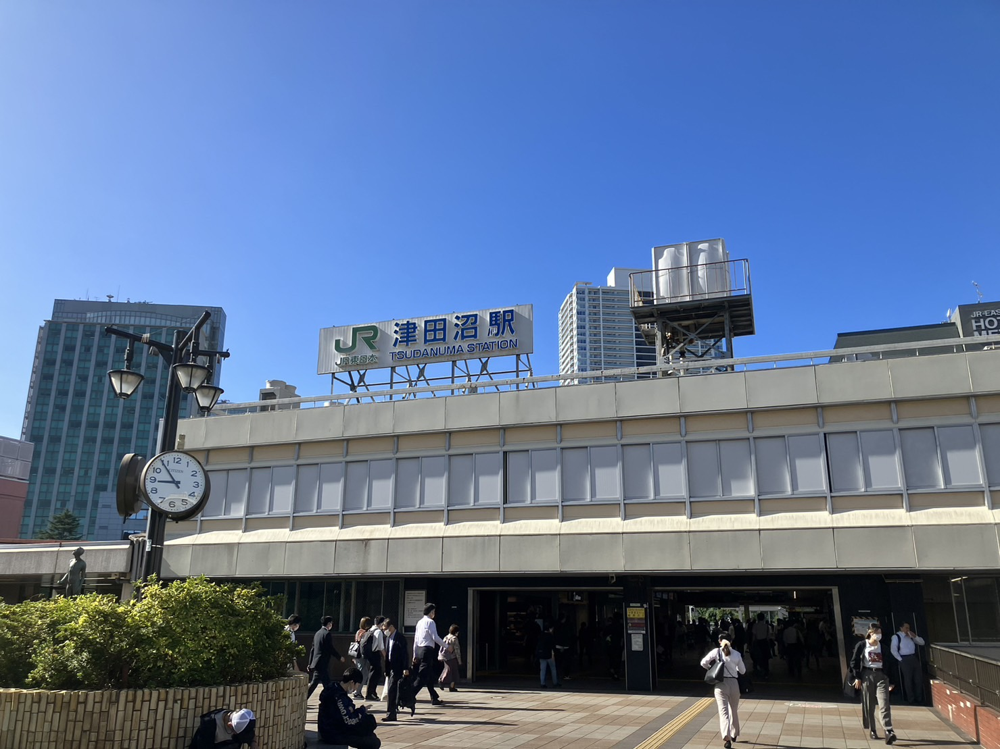
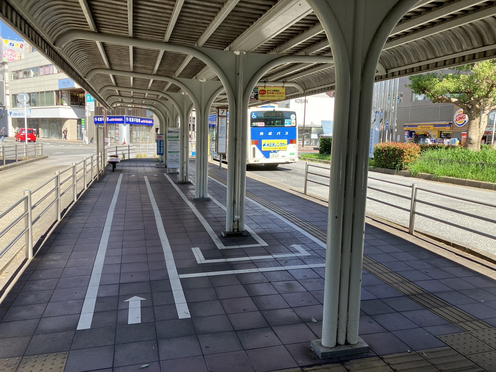
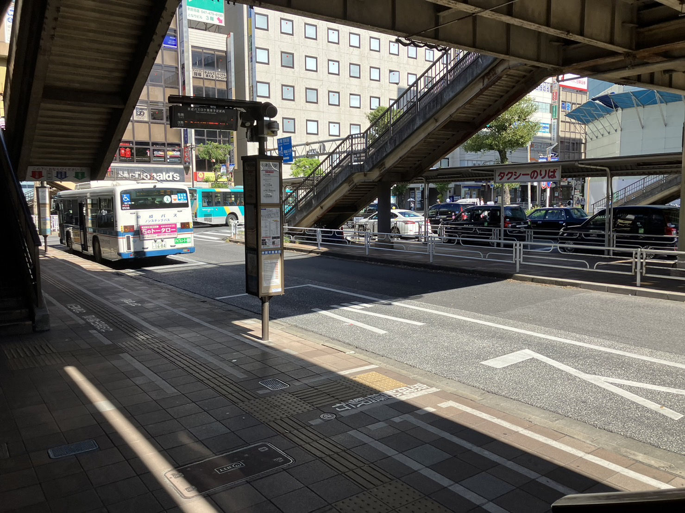
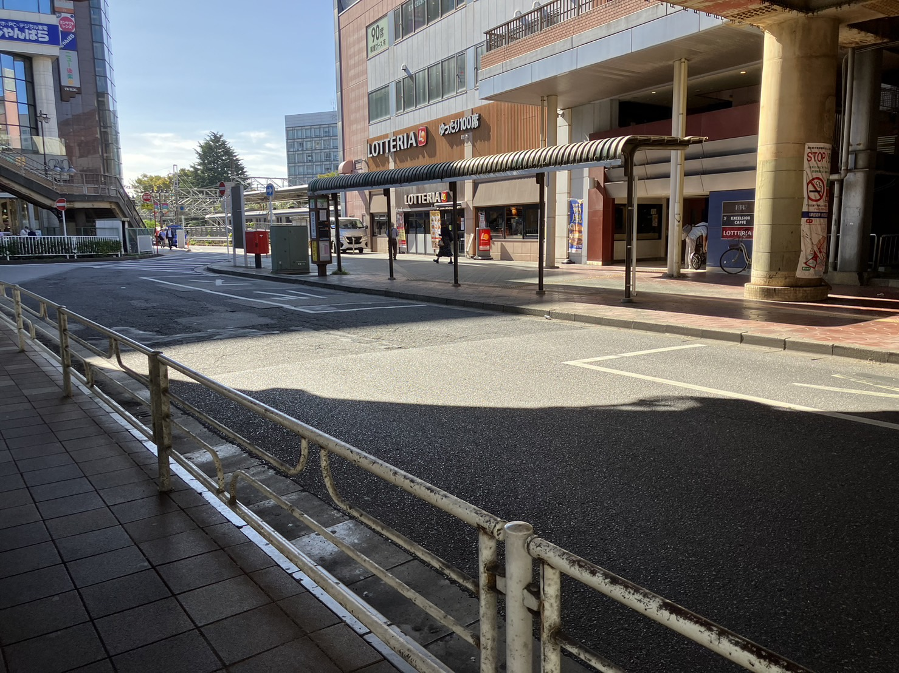
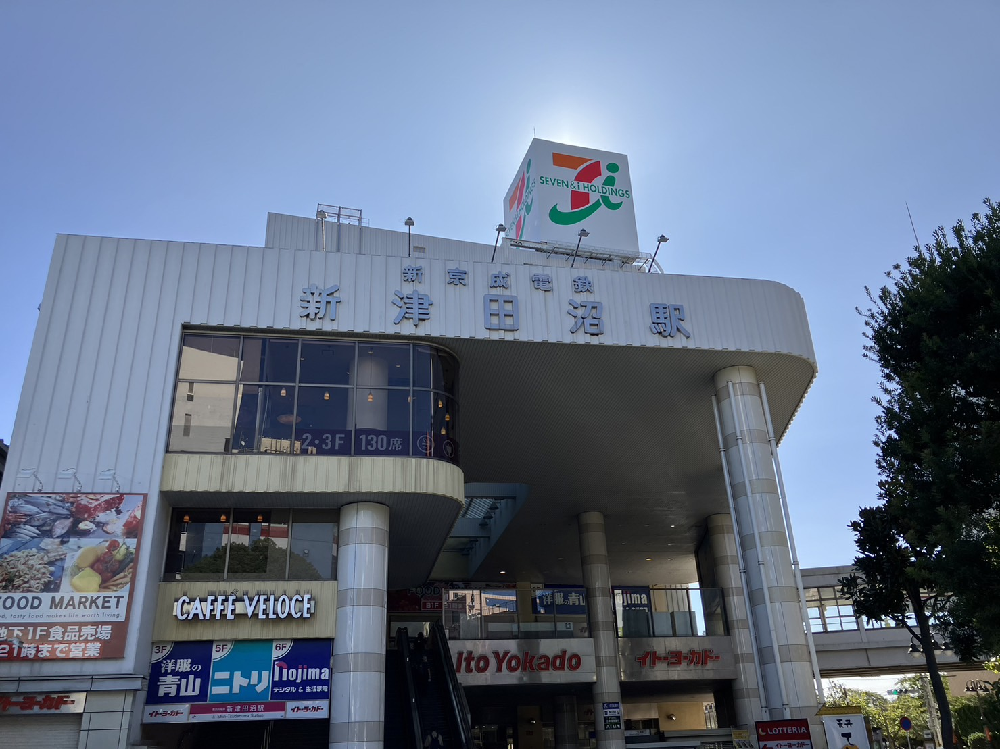
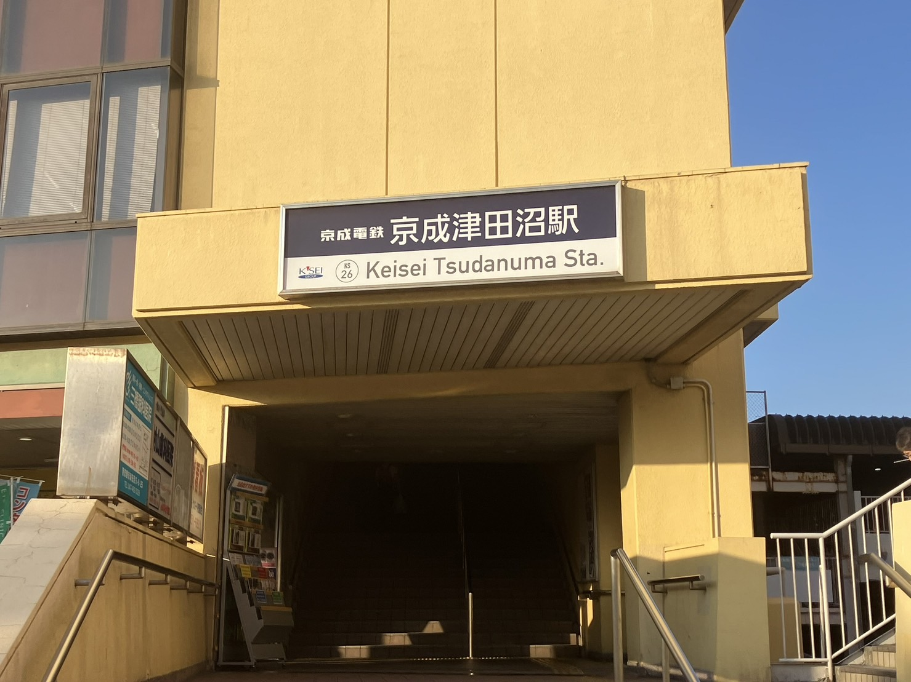

アクセス情報
・津田沼駅
1日の平均利用者数159598人(2021年統計)。JR総武線、総武線快速が停まる。都心へのアクセスも良く利用者数は三駅の中では一番多い。東京駅へ30分程で移動することができる。千葉駅にも10分ほどで移動することができる。駅周辺が非常に栄えており多くのショッピングモールや娯楽施設が並んでいる。
・津田沼駅（南口）バス
津田沼駅南口前のバス停。主な行先として新習志野駅、津田沼高校、イオンモール幕張新都心などが挙げられる。どのバス停も平日は早くて約10分毎、遅くとも30分毎にバスが出ている。
・津田沼駅（北口）バス
津田沼駅北口前のバス停。南口よりバスの数と停留所が多い。主な行先として京成船橋駅、東邦大学前、日大生産工学部などがある。他にも神社や病院などに停まる。
 ・新津田沼駅
1日の平均利用者数54218人(2021年統計)。新京成線。新津田沼駅は津田沼駅から徒歩5分程の位置にある。ショッピングモールが併設している。
・京成津田沼駅
1日の平均利用者数59839人(2021年統計)。京成線、新京成線、京成千葉線。上記の2つの駅から徒歩20分程度。京成千葉線と新京成線のターミナル駅になっており多方面へのアクセスが充実。
治安情報
図は千葉県警が公開している情報をグラフにまとめたもの。津田沼駅の南口と北口で南口付近が習志野市、北口付近が船橋市に分かれている。図から分かる通り習志野市は治安が悪い。人口1万人当たりの犯罪総数は千葉県の中でも上位に入る。このグラフは令和４年の統計だがそれ以前の5年間のデータでも船橋市の人口1万人当たりの犯罪総数が習志野市を上回る統計は無い。北口の船橋市は犯罪総数が少ない。習志野市とは逆に千葉県の中でもかなり犯罪が少ない市である。しかし、北口はキャバクラなどの接待の店が多く駅周辺に限れば治安は船橋市の方が悪いような気はする。

考察
津田沼は駅が3つあるため都市部や地方へのアクセスが充実しており非常に便利である。特にJR津田沼駅と新津田沼駅は駅同士の距離も非常に近く2駅で総武線、総武線快速、新京成線の３路線が使える。駅周辺のバスの規模も非常に大きく駅から離れた住宅街や病院などの施設までバスと駅をつないでいる。このように他の町と比べて、津田沼郊外、津田沼内への移動がしやすい作りになっている。特に津田沼駅、新津田沼駅周辺の施設はすさまじく至るところにショッピングモールや大型施設が並んでいる。これらの2駅に比べ京成津田沼駅周辺は閑散とした状態である。京成津田沼駅周辺の大きな特徴として住宅街と非常に近いということである。津田沼駅、新津田沼駅は多くのモールが並んでいるため人の住むスペースがない。これらの事から津田沼駅周辺での飲食業や、服飾店などの営業は困難であると思われる。京成津田沼駅は新津田沼駅と利用者数があまり変わらないが駅周辺の飲食店などの店舗数が少ない。よって京成津田沼駅周辺での店舗展開はうまくいく可能性が高いと思われる。